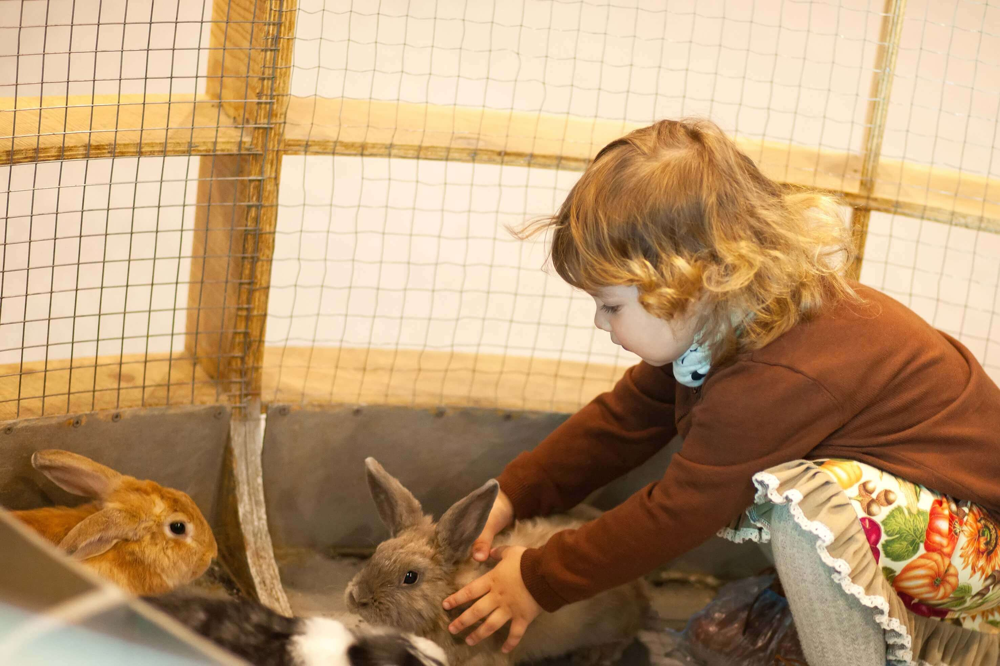
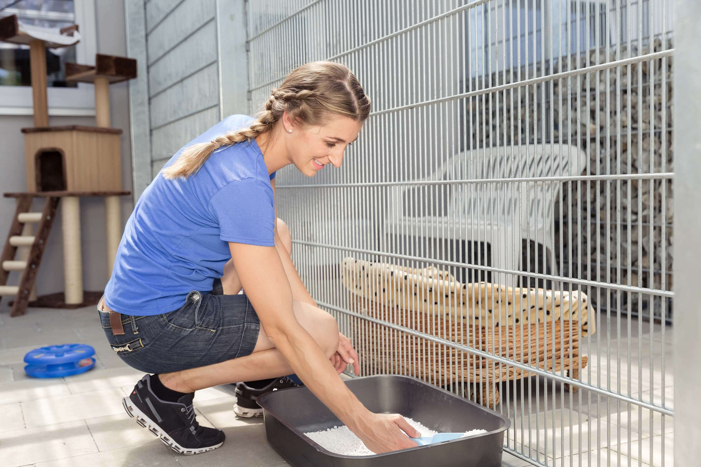
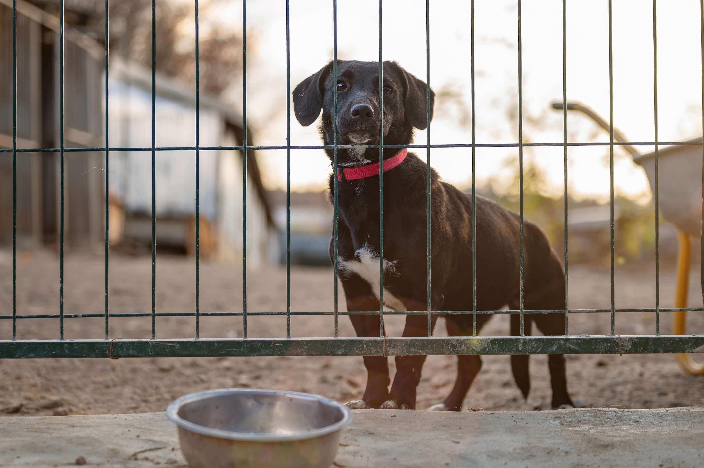
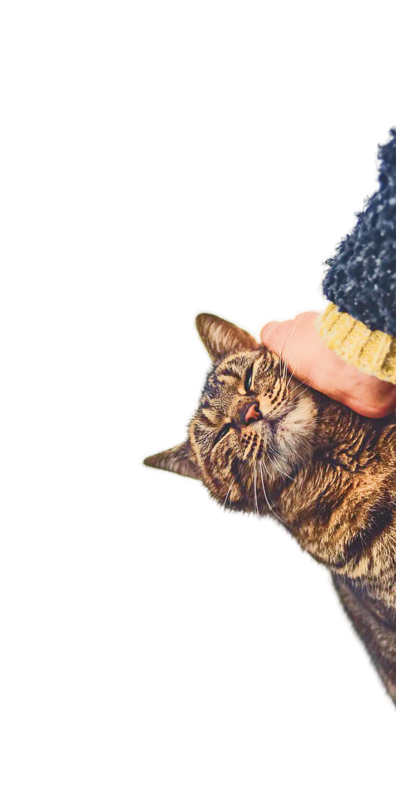

Täglich kommen neue Tiere zu uns ins Heim. Manche werden verletzt auf der Straße gefunden. Andere werden von ihren bisherigen Besitzern abgegeben. Oder Hund und Katz werden gar ausgesetzt. Das Diefreind-Team versorgt und pflegt die Schützlinge und betreut sie medizinisch. Ziel ist, ein neues Zuhause für sie zu finden. Wir allein schaffen nicht alles. Deshalb freuen sich unsere Gäste auf euch. Es gibt viel zu erleben und viel zu tun im Tierheim: Katzen streicheln, Gassigehen, Hamster füttern, Gehege pflegen. Ob für Kinder, Jugendliche oder Erwachsene - für alle ist etwas Passendes dabei. Seht euch unser großes Angebot an.
Kinder und Jugendliche

Hunde ausführen (für Kinder in Begleitung eines Erwachsenen)
Unsere Vierbeiner brauchen Bewegung. Einen fremden Hund an der Leine Gassiführen dürfen Kinder ab 12 Jahren – aber nur, wenn ein Erziehungsberechtigter dabei ist. Das hat gute Gründe: Weil unsere Tiere manchmal ein bisschen eigensinnig sind – kein Wunder bei dem harten Leben, das manche bereits hinter sich haben.
Lust bekommen? Dann klicke auf den Link und fülle das Formular aus. Wir melden uns.
Zum FormularKatzen streicheln und Katzen vorlesen (für 6- bis 14-Jährige)
Es wird euch nicht wundern, dass die Tiere regelmäßige Streicheleinheiten lieben. Ihr könnt euch auf diese Weise mit ihnen anfreunden. Oft sind unsere Kätzchen jedoch scheu und trauen dem Menschen nicht sofort. Da wirkt es Wunder, wenn ihr aus einem Buch vorlest. Das schüchterne Tier gewöhnt sich an eure Stimme, kommt langsam näher und lässt sich am Ende vielleicht sogar streicheln. Und ihr habt laut Lesen geübt – ganz nebenbei.
Lust bekommen? Dann klicke auf den Link und fülle das Formular aus. Wir melden uns.
Ferienprogramme (für 8- bis 11-Jährige)
Ihr lernt unsere Tierheimbewohner kennen, ihre Eigenarten und Bedürfnisse. Ihr dürft einzelne Pflegearbeiten übernehmen. Wir machen Ausflüge in die „wilde“ Natur, bauen mit euch Insektenhotels und Vogelhäuser und beschäftigen uns mit dem Tierschutz.
Hier erfährst du die nächsten Termine.
Ferienprogramm Termine
Schülerpraktikum (Mindestalter 14 Jahre)
Im Rahmen eines von der Schule organisierten Praktikums könnt ihr bei uns ein bis zwei Wochen mitarbeiten. Ihr lernt dabei alle möglichen Aufgaben kennen – von der Aufnahme abgegebener oder ausgesetzter Tiere über ihre Versorgung und Pflege bis hin zur Vermittlung an Paten oder in ein neues Zuhause.
DieArbeitszeit dauert von Montag bis Freitag jeweils von 9 bis 16 Uhr.
Neugierig geworden? Dann klicke auf den Link und fülle das Formular aus. br Wir melden uns zeitnahe bei dir.
Zum FormularErwachsene
Hunde ausführen
Wenn Sie mindestens 18 Jahre alt sind, können Sie sich zu einem Einführungs-Seminar anmelden. Dort erfahren Sie Tipps und Tricks, die im Umgang mit manchmal eigenwilligen Hunden nötig sind, plus alle (versicherungs)rechtlichen Regeln. Das Seminar ist die Voraussetzung, um regelmäßig einen der Tierheimhunde ausführen zu dürfen – allein oder mit Ihren Kindern.
Termine für die nächsten Seminare erfahren Sie hier.
Pflegedienste übernehmen
Ob Katzen streicheln, Meerschweinchen füttern oder Stallungen ausmisten - wir sind froh, wenn wir regelmäßig auf Ihre helfenden Hände zählen dürfen. Am besten ist es, wenn Sie am Vormittag zwischen 9 und 12 Uhr Zeit haben und sich für einen festen Tag in der Woche entscheiden. Eines garantieren wir Ihnen: Es gibt immer etwas Neues; langweilig werden diese Dienste nie.
Interessenten melden sich hier. Wir melden uns dann bei Ihnen.
Zum FormularHandwerklich aktiv werden
Es gibt immer etwas zu reparieren und zu verbessern in den Gehegen, Stallungen und im Freigelände. Wenn Sie einen handwerklichen Beruf haben oder einfach gerne mit Holz, Metall oder im Garten arbeiten, können Sie uns eine große Hilfe sein. Interessenten melden sich hier.
Wir melden uns dann bei Ihnen.
Zum Formular
Patenschaft übernehmen
Sie möchten sich gerne um ein Tier kümmern, haben aber zu Hause keinen Platz? Dann übernehmen Sie einfach die Patenschaft für einen unserer „Dauergäste“. Denn es gibt Tiere, die zu alt, zu auffällig oder zu krank sind, um noch in einen anderen Haushalt vermittelt zu werden. Sie bleiben bei uns. Wenn Sie mit einer regelmäßigen Spende für Futter und medizinische Versorgung aufkommen, hilft uns das sehr. Und Sie können Ihr „Patenkind“ immer mal wieder besuchen.
Interessenten melden sich hier. Wir melden uns dann bei Ihnen.
Zum FormularInfoabend
Wenn Sie all diese Informationen gelesen haben, sich aber noch ein genaueres Bild machen wollen, bevor Sie sich entscheiden, dann nehmen Sie doch gerne an einer unserer monatlichen Infoveranstaltungen teil.
Hier können Sie sich für den nächsten Termin anmelden.
Zum FormularIch möchte mich im Tierheim engagieren:
